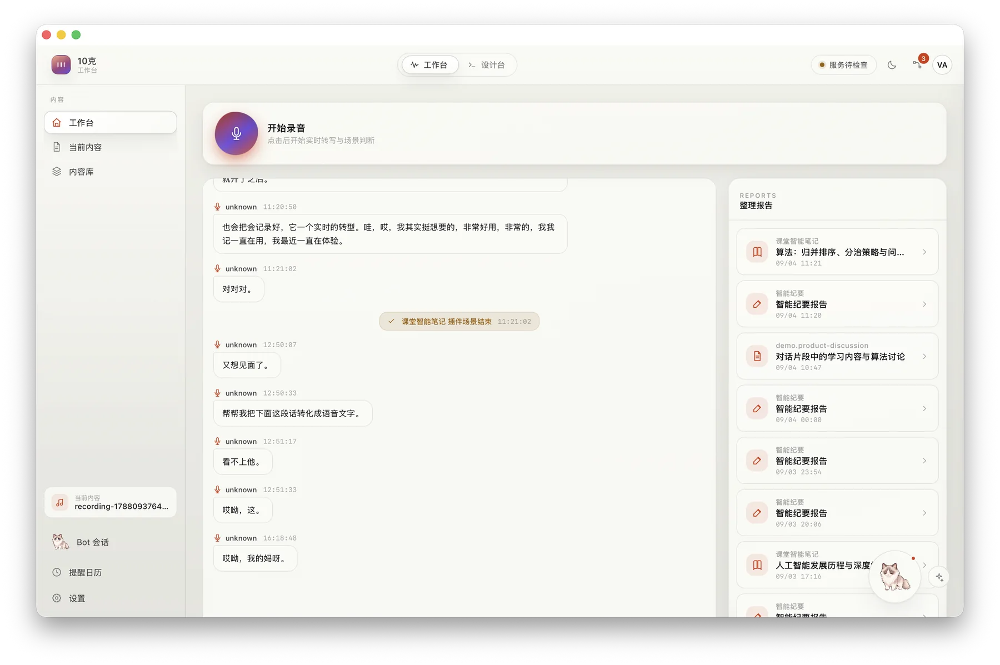
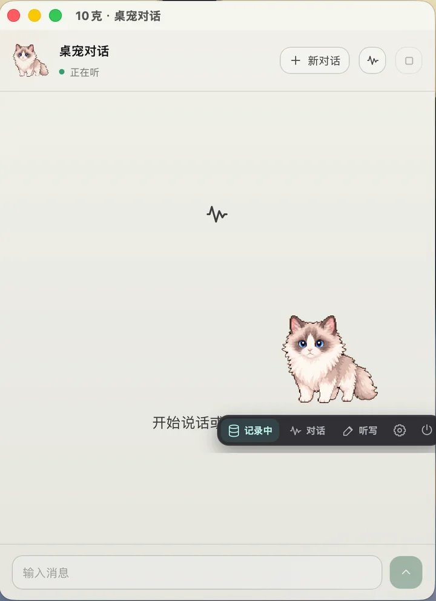
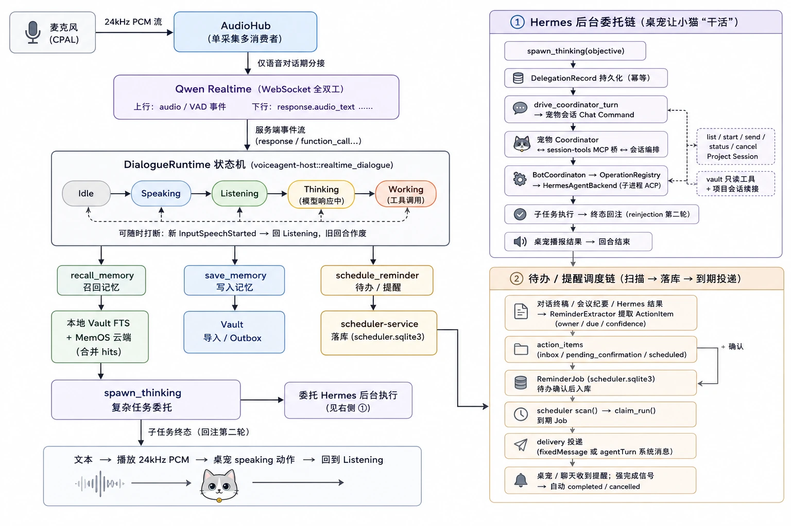
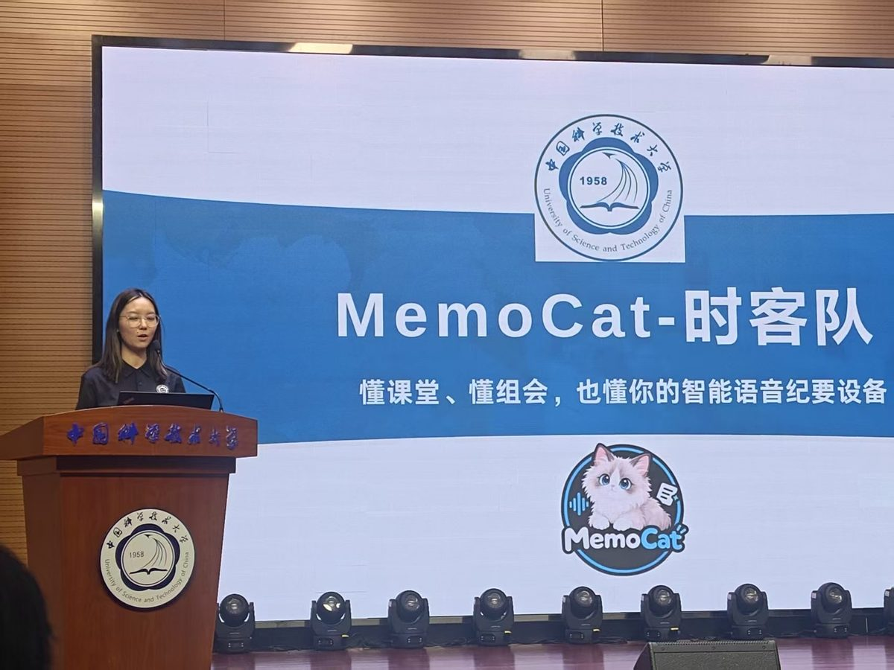
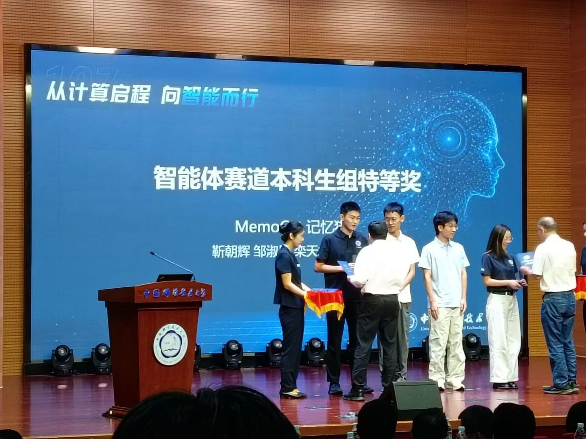

- 简介About
- 项目Projects
- MemoCat 记忆猫MemoCat
MemoCat 记忆猫懂课堂、懂组会，也懂你
MemoCatGets your lectures, your meetings, and you
一只常驻电脑桌面的布偶猫。它在后台持续听写、分辨说话人、判断你正处在什么场景，再按你定义的方式把对话整理成结构化报告，存进可检索、可溯源的本地记忆库；你也可以随时开口和它聊天，让它帮你回忆、提醒和办事。
A ragdoll cat that lives on your desktop. In the background it transcribes what is said, tells speakers apart, works out what kind of conversation you are in, and writes it up as a structured report in the format you define, stored in a searchable, source-traceable local memory. You can also just talk to it, and it will recall things, remind you and get small jobs done.
- 时间YEAR
- 2026
- 荣誉AWARD
- “一〇七杯”智能体赛道本科生组特等奖107 Cup Grand Prize, Agent Track (Undergraduate)
- 团队TEAM
- 时客队 · 4 人Team Shike · 4 members
- 技术STACK
- Rust · Tauri 2 · React 19

为什么做 MemoCatWhy MemoCat
人在说话时产生的信息最密集：一次授课、一场组会、一轮头脑风暴，最有价值的内容大多在口头交流中产生，也流失得最彻底。手写跟不上语速，记录又和思考争夺同一份注意力；即使录音和逐字稿留了下来，也很少有人会重听、重读，它们最终堆进一个再也不会打开的文件夹，我们把它叫作“记录墓地”。
存储解决了“留下”，却没有解决“用上”。真正缺的一步，是把口头表达自动整理成可以直接使用的知识。MemoCat 想把“整理”这件一直靠人工完成的事交给 AI，让使用者只需要把话说好、把问题想清楚。
核心想法：整理规则应该由用户按场景定义，而不是由产品预设。数学课需要定理与推导，组会需要每个人的进展和下周计划，产品讨论需要决策点和待办。
Speech is where people produce information most densely. A lecture, a group meeting or a brainstorm is where the most valuable ideas come up, and also where they are lost most completely. Handwriting cannot keep up with speech, and taking notes competes with thinking for the same attention. Even when recordings and transcripts survive, almost nobody listens to or reads them again; they pile up in a folder that is never reopened, which we call the “record graveyard”.
Storage solved keeping things, not using them. The missing step is turning speech into knowledge you can actually use. MemoCat hands that step, organizing, which has always been manual work, over to AI, so people only need to speak well and think clearly.
Key idea: the rules for organizing notes should be defined by users for each scene, not preset by the product. A math lecture needs theorems and derivations, a group meeting needs everyone's progress and next week's plan, and a product discussion needs decisions and action items.
怎么用How it is used
MemoCat 的唯一入口是桌面角落的一只布偶猫（也可以换成别的形象）。窗口透明、置顶、不抢焦点，可以拖到屏幕任何位置；鼠标悬停时出现工具条：记录、对话、听写、设置。
上课或开会前点一下开始记录，之后就可以忘掉它：转写、场景判断和整理都在后台自动完成。需要回顾时再打开工作台，按时间线或场景浏览报告，全文检索说过的任何一句话，并跳回原始对话甚至原始录音。
The only entry point is a ragdoll cat in the corner of your desktop (other skins are available). Its window is transparent, always on top and never steals focus, and you can drag it anywhere. Hovering shows a toolbar: record, talk, dictate, settings.
Click once before a lecture or meeting and forget about it: transcription, scene detection and organizing all happen in the background. When you want to look back, open the workspace to browse reports by time or scene, search everything that was said, and jump back to the original conversation or even the original audio.

核心能力What it does
无感记录Ambient recording
后台持续采集与转写，声纹识别区分说话人，文字、时间戳与说话人统一存入同一条时间线。
Continuous capture and transcription in the background. Voiceprints tell speakers apart, and text, timestamps and speakers share one timeline.
按场景整理Scene-aware notes
自动判断当前是课堂、会议、组会还是问诊，场景结束后调用对应插件生成结构化报告；插件可以由用户自己定义。
Detects whether you are in a lecture, meeting, group meeting or consultation, and runs the matching plugin to write a structured report when it ends. Users can write their own plugins.
可溯源的长期记忆Traceable memory
原始对话与整理报告双路召回，每个回答都标注出处，可一键跳回原句和录音；可选接入云端长期记忆。
Recalls from both raw transcripts and reports. Every answer cites its source and links back to the exact sentence and audio. Cloud memory is optional.
实时语音对话Real-time voice agent
全双工语音对话，随时可以打断；能回忆过去的内容、设置提醒，并把复杂任务交给后台智能体，聊天和干活互不耽误。
Full-duplex voice chat you can interrupt at any time. It recalls past conversations, sets reminders and hands bigger jobs to a background agent, so chatting and working never block each other.
语音输入法Voice typing
按下快捷键说话，转写结果直接插入当前应用的光标处，失败时自动降级为粘贴或复制。
Press a hotkey and speak. The text lands at the cursor of whatever app you are in, falling back to paste or copy when needed.
待办与提醒To-dos & reminders
从对话和会议中自动提取待办事项（负责人、截止时间），确认后进入提醒日历并按时提醒。
Pulls action items (owner, due date) out of conversations and meetings; once confirmed they go on a reminder calendar and fire on time.
系统设计How it is built
MemoCat 的核心是一条把语音变成结构化知识的流水线。系统是本地优先的：原始音频、声纹、对话记录、整理报告和智能体状态都保存在用户自己的电脑上，只有需要模型处理的文本和音频片段才会发往云端。
At its core MemoCat is a pipeline that turns speech into structured knowledge. It is local-first: raw audio, voiceprints, transcripts, reports and agent state all stay on the user's own computer, and only the text and audio snippets a model has to process are sent to the cloud.
-
语音采集Capture
WebRTC VAD 以 30 ms 为一帧检测语音：停顿 1.2 秒即封块送转写，连续讲话 12 秒强制切分，短于 0.5 秒的片段丢弃；原始音频按内容哈希存储，方便回听与溯源。
WebRTC VAD on 30 ms frames: a 1.2 s pause seals a chunk for transcription, continuous speech is cut at 12 s, and chunks under 0.5 s are dropped. Raw audio is stored by content hash for playback and tracing.
-
转写与说话人识别Transcription & speakers
云端 ASR（Qwen3-ASR-Flash 等）输出带时间戳的文本；本地用 ONNX Runtime 运行 CAM++ 提取 256 维声纹，以 0.90 / 0.85 两档阈值匹配正式声纹与临时声纹。
Cloud ASR (Qwen3-ASR-Flash and others) returns timestamped text, while CAM++ runs locally on ONNX Runtime to extract 256-d voiceprints, matched against confirmed and provisional speakers at 0.90 / 0.85 thresholds.
-
场景判断Scene detection
每积累 10 句或每隔 45 秒，用大模型做一次轻量判断，配合时间确认状态机识别场景的开始与结束，决定触发哪个整理插件。
Every 10 sentences or 45 seconds, a lightweight LLM call plus a time-confirmation state machine decides when a scene starts and ends, and which plugin should run.
-
结构化整理Structured notes
插件用声明式清单定义提示词、输出 Schema 与规则，并先经过编译器校验；生成的报告必须通过 Schema 校验和溯源校验，失败时把错误信息回传给模型定向修复。
Plugins declare their prompts, output schema and rules in a manifest that a compiler checks first. Every report must pass schema and source-tracing checks; failures are sent back to the model for a targeted fix.
-
记忆与检索Memory & retrieval
报告与原始对话存入 SQLite（FTS5 全文索引），通过句子编号精确关联；检索时双路召回、带出处作答，也可以接入 MemOS / OpenMem 做语义召回。
Reports and transcripts go into SQLite with FTS5 full-text search, linked by sentence IDs. Retrieval draws on both and always answers with sources; MemOS / OpenMem can be plugged in for semantic recall.
实时对话基于 Qwen-Audio Realtime 的 WebSocket 全双工接口，注册了 6 个工具：记忆召回、记忆写入、提醒、待办列表、待办更新和后台任务委派。复杂任务交给后台的 Hermes 智能体执行，它通过 MCP 只读访问记忆库，任何写操作都要用户在桌宠气泡上批准。整理插件还能“自进化”：系统根据反馈生成改进提案，用历史对话回放对比新旧版本，审核后生效，并支持一键回滚。
Voice chat runs on the full-duplex Qwen-Audio Realtime WebSocket API with six tools: recall memory, save memory, set a reminder, list to-dos, update to-dos and delegate a background task. Complex jobs go to a background Hermes agent that reads the memory store through read-only MCP tools; any write needs the user's approval in a bubble above the pet. Plugins can also improve themselves: the system drafts changes from feedback, replays past conversations to compare old and new versions, and applies a change only after review, with one-click rollback.

技术栈Tech stack
| 后端Backend | Rust 工作区（25 个 crate）：Rust workspace of 25 crates: tokio cpal webrtc-vad rusqlite ort |
|---|---|
| 桌面壳Desktop shell | Tauri 2：透明、无边框、置顶、不抢焦点的桌宠窗口Tauri 2: a transparent, frameless, always-on-top pet window that never steals focus |
| 前端Frontend | React 19 · TypeScript · Vite |
| 存储Storage | 7 个本地 SQLite 库（对话时间线、记忆库、声纹库、提醒、审批、智能体会话、应用状态）；音频按内容哈希存储Seven local SQLite databases (timeline, memory, voiceprints, reminders, approvals, agent sessions, app state); audio stored by content hash |
| 模型Models | Qwen3-ASR-Flash（转写）· Qwen-Audio Realtime（实时对话）· DeepSeek（场景判断、整理、检索问答）· CAM++（本地声纹）Qwen3-ASR-Flash (transcription) · Qwen-Audio Realtime (voice chat) · DeepSeek (scene detection, notes, Q&A) · CAM++ (local voiceprints) |
| 智能体Agents | Hermes 后台智能体（ACP 协议）· MCP 只读记忆工具 · 写操作审批Hermes background agent (ACP) · read-only MCP memory tools · approval for every write |
有什么不同What makes it different
- 整理规则可定制常见的语音纪要产品用同一套模板处理所有场景；MemoCat 让每个场景、每个人都可以有自己的整理插件。
- Customizable organizingTypical voice-notes apps apply one template to every scene; in MemoCat every scene, and every person, can have its own plugin.
- 无感的入口用一只桌宠代替臃肿的前端，记录、对话和听写都在同一个入口完成，不必来回切换软件。
- An ambient entry pointA desktop pet replaces a heavy front end; recording, chatting and dictation all happen in one place, with no app switching.
- 每个回答都有出处回答必须能回落到原始对话和录音，方便核对，不让模型凭空发挥。
- Every answer has a sourceAnswers must trace back to the original conversation and audio, so they can be checked rather than taken on trust.
- 本地优先原始数据留在本机，云端只处理必要的片段；密钥与普通配置分开保管，不进入日志。
- Local-firstRaw data stays on your machine and the cloud sees only what it must; API keys are stored apart from settings and never logged.
比赛与团队Competition & team
MemoCat 由时客队（靳朝辉、邹淑彤、栾天煜、刘铠宁）完成，在 2026 年 9 月的“一〇七杯”算力与智能体开发大赛中获得智能体赛道本科生组特等奖。团队目前正在筹备创业，继续把它做成真正的产品。
MemoCat was built by Team Shike (Zhaohui Jin, Shutong Zou, Tianyu Luan and Kaining Liu) and won the Grand Prize in the Agent Track (Undergraduate Group) of the “107 Cup” Computing Power & AI Agent Development Competition in September 2026. The team is now preparing to turn it into a real product as a startup.

